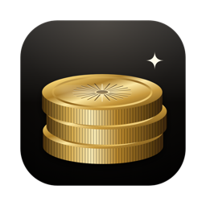

Privacy Policy
Cashbell for macOS · Effective September 27, 2026
Who we are
Cashbell is made by Reaktör Teknoloji Tic. Ltd. Şti. (trading as Reactll), Şahkulu Mah. Serdar-ı Ekrem Sk. No:15/A, Galata, Beyoğlu, İstanbul 34430, Türkiye. Questions: sedat@reactll.com.
What stays on your Mac
- Your projects and settings, in Cashbell's own storage on your Mac.
- API keys you enter for your payment platforms, in the macOS Keychain.
- Sales history fetched from your payment platforms (amounts, product names, dates and, where the platform provides it, the buyer's country), so the app can show totals, charts and insights. Cashbell never stores buyers' names or email addresses.
None of this is sent to us. We can't see it, and deleting the app deletes it.
Who Cashbell talks to
- The payment platforms you connect (such as Stripe, Paddle, Lemon Squeezy or Creem), directly from your Mac with the keys you provide, to read your sales. Their own privacy policies apply to the data they hold for you. Cashbell only reads; it never changes or refunds anything.
- Frankfurter (frankfurter.dev), once a day, to download public exchange rates from the European Central Bank. No personal data is sent.
- Apple Maps, to draw the customer map. The map is centered on countries, not on people, and no personal data is sent.
- The App Store, if you buy Cashbell Pro. Apple handles the purchase; we don't receive your payment details.
- GitHub, only in the version downloaded from our website, to check for updates. The request carries only the app's version, as any download does.
Backups
If you export a backup, the file is saved where you choose and is never uploaded by Cashbell. API keys are only included if you set a password, and are then encrypted with it.
Notifications
Sale notifications and summaries are created on your Mac and shown by macOS. They don't pass through any server.
Children
Cashbell is a business tool and isn't directed to children.
Your rights
Because we don't collect personal data, there is nothing for us to access, correct or delete. You're always in control of the data on your Mac: remove a project in Settings, or delete the app.
Changes
If this policy changes, we'll update this page and its effective date.